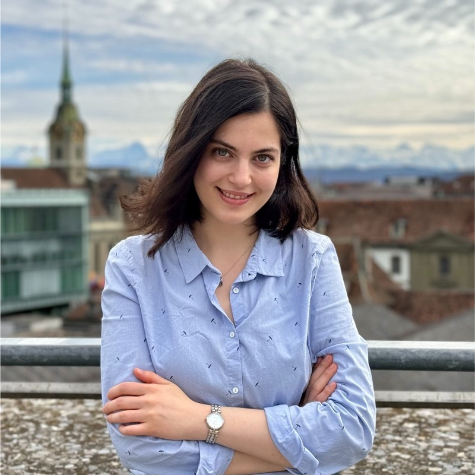

Cheminformatics · AI in drug discovery · Machine learning · Target prediction

Hi there! I'm Maddie, a PhD researcher in cheminformatics in the
Reymond group
at the University of Bern.
I work on machine learning for drug discovery, building models and
open-source tools that predict how small molecules interact with their
biological targets. I also design antimicrobial and anticancer peptides and
model their properties. Before Bern, I studied analytical chemistry (MSc,
Tarbiat Modares University) and pure chemistry (BSc, Guilan University).
Outside the lab, you'll find me doing portrait and nature photography, hiking
in the Swiss Alps, or hosting my loved ones with homemade Persian food.
Designing antimicrobial and anticancer peptides and building
machine-learning models to predict their biological properties, such as
antibacterial activity, hemolysis, and cytotoxicity, to guide synthesis
and optimization.
Key Research
2026 ·
Machine-Learning Guided Exploration of Antimicrobial Peptide Stereoisomers.
submitted B Rufer, M Darsaraee, M Orsi, BH Gan,
S Javor, JL Reymond. Journal of Medicinal Chemistry.
2026 ·
Predicting Active and Inactive Targets of Small Molecules from ChEMBL Data
Using the Polypharmacology Browser PPB4.
submitted M Darsaraee, JL Reymond. ChemMedChem.